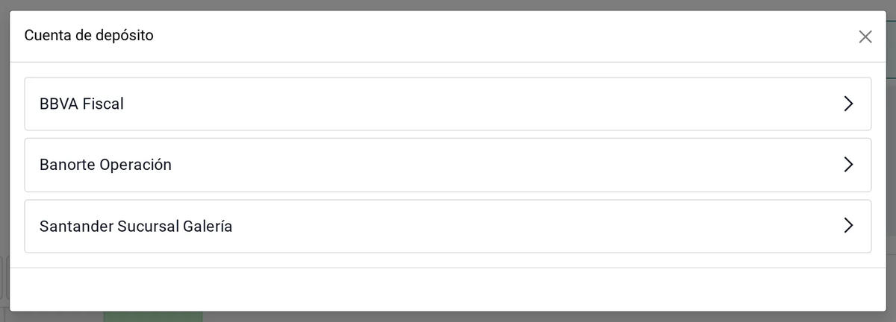
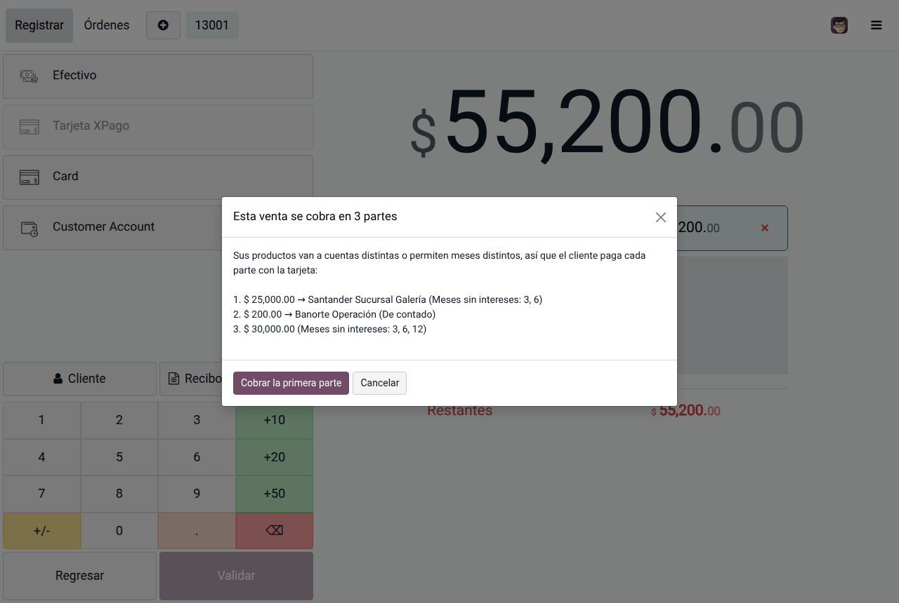
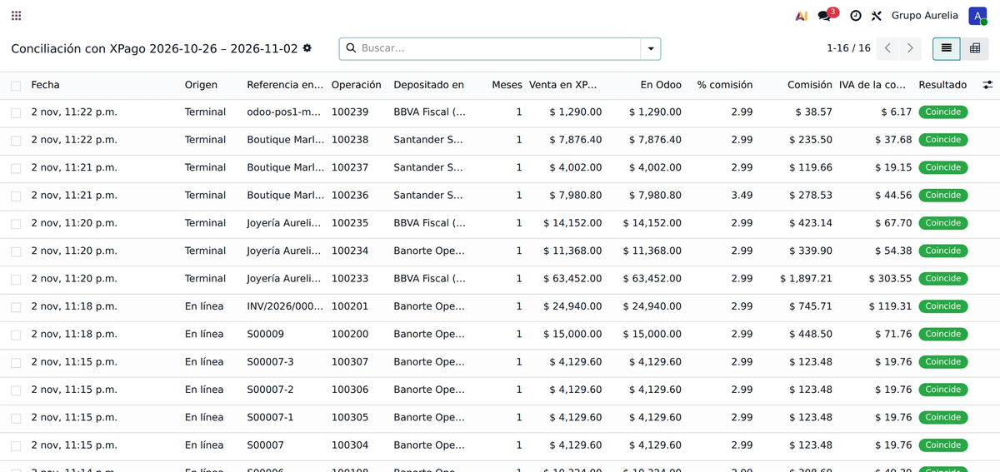
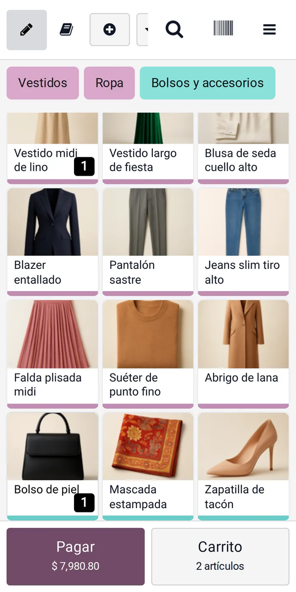

<section class="oe_container" style="font-family:Inter,Arial,sans-serif;color:#24201C">
  <div style="max-width:1080px;margin:0 auto;padding:24px 16px">
    <h2 style="font-size:32px;margin:0 0 8px;text-align:center">XPago en el Punto de Venta de Odoo</h2>
    <p style="text-align:center;font-size:18px;color:#776E64;margin:0 0 12px">La caja manda el monto a la terminal XPago y la tarjeta aprobada regresa al pedido. México.</p>
    <p style="text-align:center;color:#776E64;margin:0 0 16px"><i>Card payment terminal for the Odoo Point of Sale in Mexico: the POS sends the amount to the Newland terminal and the approved card comes back to the order. The Odoo POS also runs on the terminal itself.</i></p>
<p style="text-align:center;font-size:15px;margin:0 0 28px"><a href="https://xpago.mx/terminal-de-pago-odoo" style="color:#B8322A">Terminal de pago para Odoo</a> · <a href="https://xpago.mx/shop" style="color:#B8322A">Terminales Newland y precios</a> · <a href="https://xpago.mx/kiosco-autoservicio-odoo" style="color:#B8322A">Kiosco de autoservicio</a> · <a href="https://xpago.mx/odoo-payments-mexico" style="color:#B8322A">In English</a></p>
    <ul style="font-size:16px;line-height:1.8">
      <li><b>Terminal nativa de Odoo:</b> «Esperando la tarjeta», cancelar desde la caja y validación automática; la tarjeta, la autorización y la operación quedan en el pago.</li>
      <li><b>La terminal es tu caja:</b> la caja de Odoo corre en las terminales Newland Android, con lector de códigos de barras y tarjeta SIM (cobra sin WiFi).</li>
      <li><b>Hasta 10 cuentas de depósito:</b> cada terminal con su cuenta, o la cajera la elige en cada cobro.</li>
      <li><b>Reglas de cobro por producto:</b> la cuenta de depósito según el producto, la categoría, la etiqueta o el precio. Si una venta lleva productos de cuentas distintas, la caja puede <b>dividir el cobro</b>: una parte por cuenta, cada una pasada con la tarjeta. Los meses de la regla se le muestran a la cajera (la terminal ofrece los de tu cuenta XPago). <i>Payment rules by product, with split charges per deposit account.</i></li>
      <li><b>Conciliación</b> con comisión, IVA de la comisión y cuenta, contra tus ventas de Odoo.</li>
      <li><b>Cobros sin venta:</b> encuentra la tarjeta cobrada que no quedó como venta antes del corte.</li>
      <li><b>Pantalla chica:</b> categorías en una fila y métodos de pago compactos para la pantalla de la terminal.</li>
      <li><b>Voucher en el mismo ticket:</b> la tarjeta, la autorización y la leyenda del pagaré salen en el ticket de la venta (impreso, por correo o por WhatsApp), con línea para firma; activado de fábrica y con leyenda editable. <i>Card voucher printed in the same receipt: on by default, legend editable.</i></li>
      <li>Aviso en Odoo por cada cobro aprobado.</li>
    </ul>
    
    
    
    
    
    
    <p style="text-align:center;margin-top:18px"></p>
    <p style="margin-top:24px">Requiere la app <b>XPago: Card Payments</b> y una cuenta XPago. Terminales: <a href="https://xpago.mx/terminal-de-pago-odoo" style="color:#B8322A">terminal de pago para el punto de venta de Odoo</a> · alta: <a href="https://xpago.mx/alta" style="color:#B8322A">abre tu cuenta XPago</a> · WhatsApp 443 688 7346.</p>
  </div>
</section>
